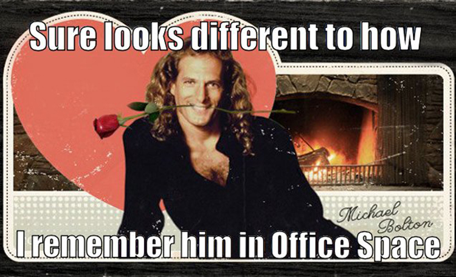

Burnout in Tech
A 'Lessons From Velocity' Session
Tom Dyer
Systems Engineer - L.I.V.E. - Solium
http://tomdyer.ca / @thomaswsdyer
Powered by reveal.js
Burnout in Tech
Based on the session by Dr. Christina Maslash (UC Berkley)
Presented at Velocity Santa Clara 2015
What Does 'Burnout' Look Like?
- Exhaustion
- Cynicism
- Professional Inefficiency
What Is Burnout?
A prolonged response to chronic interpersonal stressors while on the job.
prolonged and chronic
"I feel like it's eroding my soul."
You Know the Feeling
How Does It Happen?
Six Areas of Stressors
- Workload
- Control
- Reward
- Community
- Fairness
- Values
Anyone need a 'SCARF'?
Peter
Workload, Fairness
Samir
Recognition, Community
Michael
Control, Values
Why Should We Care?
- Poor quality of work
- Low morale
- Absenteeism
- Turnover
- Health problems
- Depression or anger
- Family problems
How Can We Help?
- Sustainable (and interesting) workload
- Choice and control
- Recognition and rewards (not just money)
- Supportive work communtiy
- Fairness, respect, social justice
- Clear values - Meaningful work
And There's More!
Prevention is better than treatment.
Engagement is the key - pay attention, talk about it.
Build it, Monitor it, Improve it.
Organizational (or team) engagement vs. individual

Why Did I Share This?
I was burnt out
What About Us?
- What do you see on the LIVE Team? Dev? Solium?
- What risks can you think of?
- What have we done in the past?
- What can we do?
Resources
This Presentation
thomaswsdyer.github.io/BurnOutInTech
Research
maslach.socialpsychology.org/
Books
The Truth About Burnout /
Banishing Burnout
Articles
Being a Go-Getter Is No Fun
/ The Power of Full Engagement